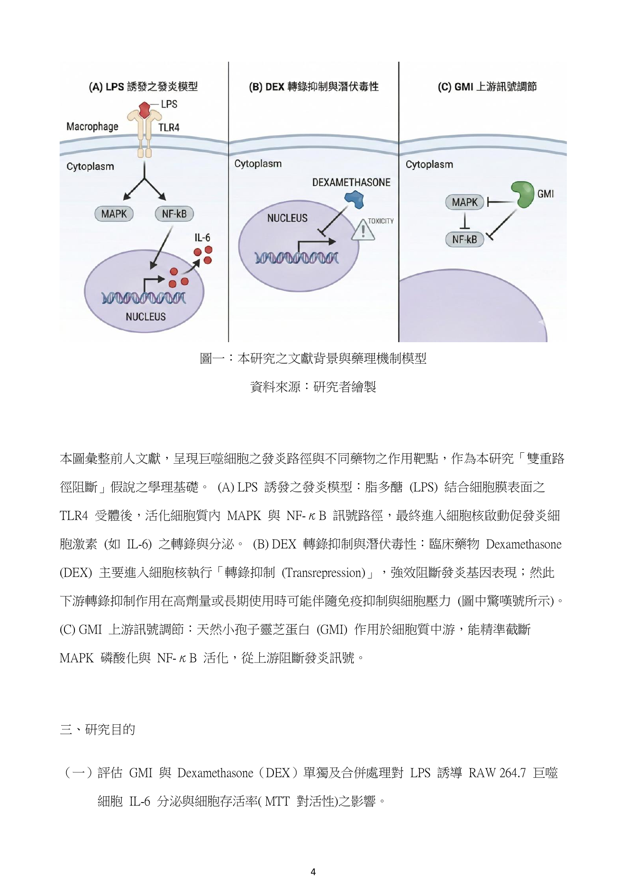
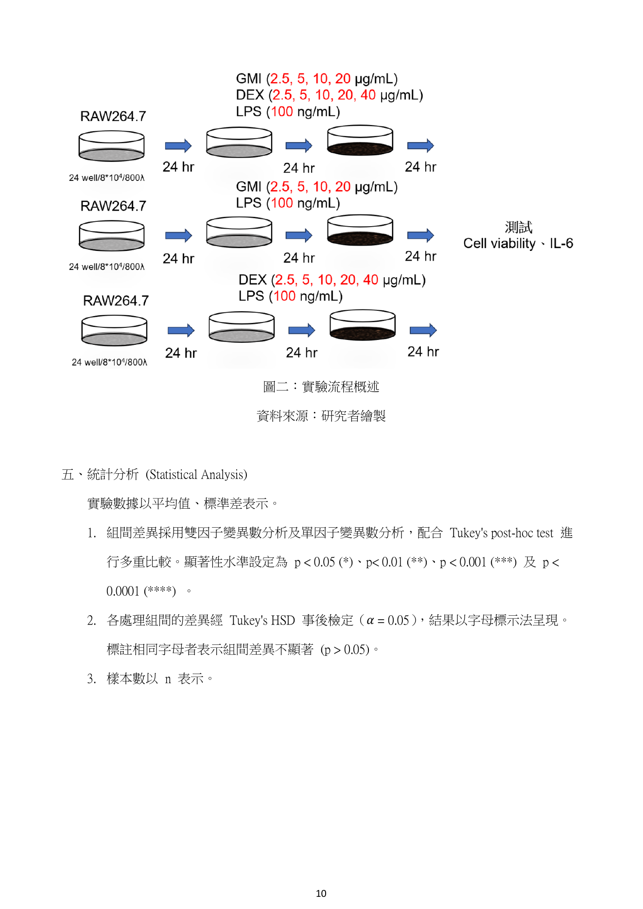
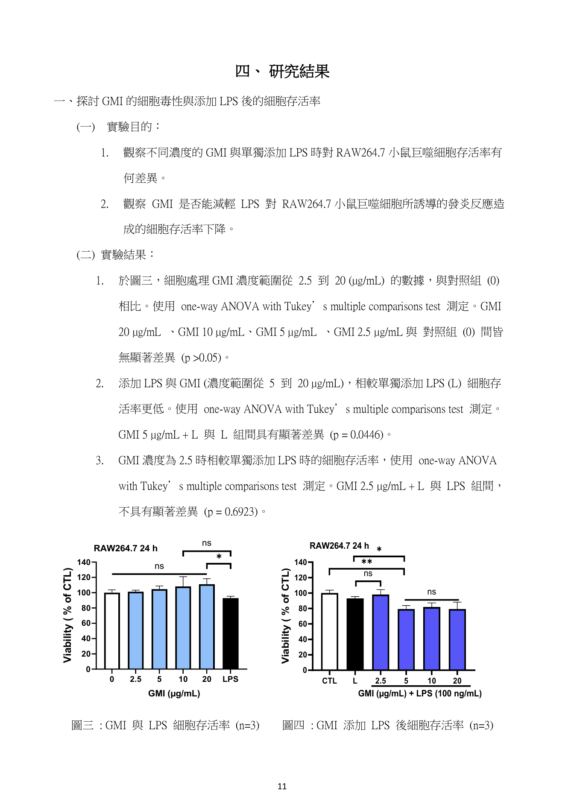
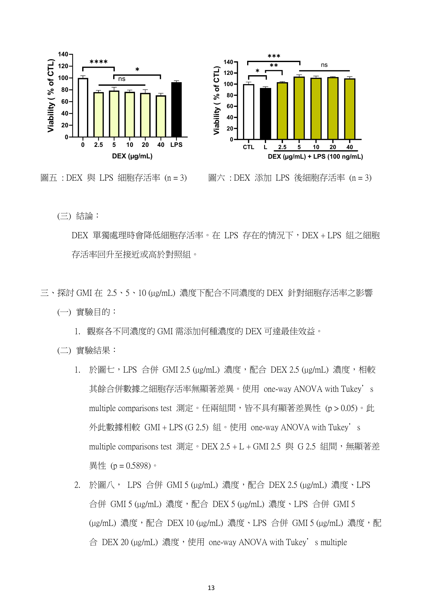
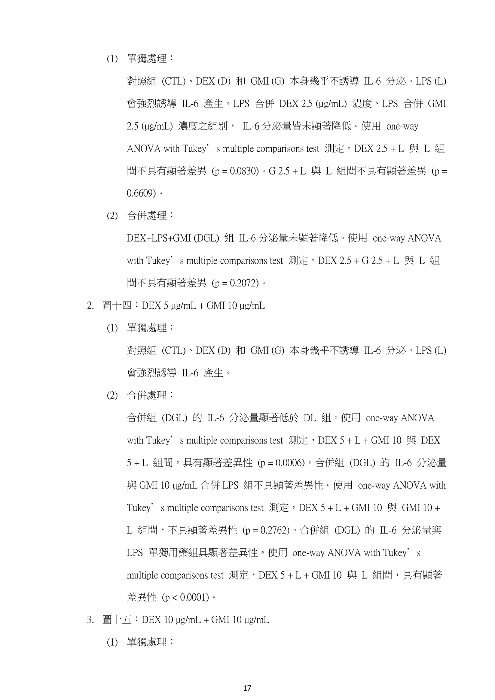
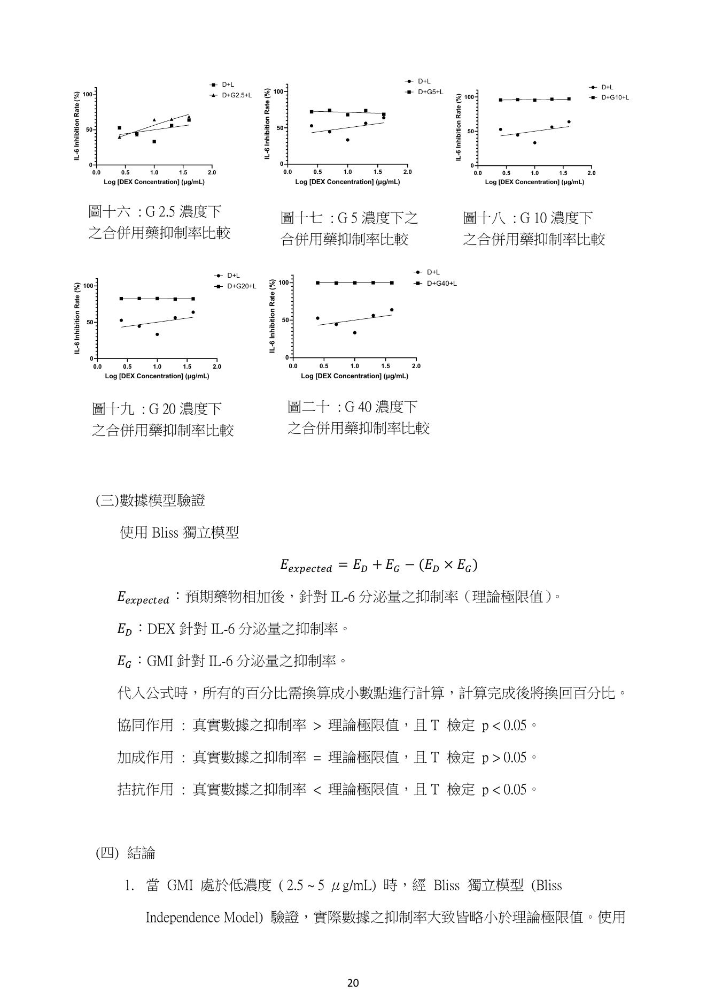

研究總覽
本研究從臨床類固醇抗發炎藥物的副作用問題出發，探討小孢子靈芝免疫調節蛋白 GMI 是否能作為 Dexamethasone 的減量輔助因子。
研究問題
DEX 可透過糖皮質激素受體與 NF-κB 等轉錄因子互作，抑制促發炎基因表現；但高劑量或長期使用可能造成免疫抑制與細胞壓力。本作品追問：若使用 GMI 同時調節發炎訊號，是否能在維持抗發炎效果的同時降低 DEX 所需劑量？
核心結論
GMI 單獨處理在 2.5–20 μg/mL 範圍內對未發炎細胞具一定相容性；但在 LPS 發炎環境中，高濃度 GMI 可能因過度抑制 NF-κB 相關存活訊號而影響 MTT 相對活性。最具減量意義的組合為 DEX 2.5 μg/mL + GMI 10 μg/mL，因其在 IL-6 抑制上優於高劑量 DEX 單用，且固定 GMI 10 μg/mL 時，提高 DEX 濃度未呈現顯著 MTT 優勢。

研究假說
DEX 偏向下游轉錄抑制，GMI 則可透過抑制 IκB 降解與 MAPK 磷酸化干預發炎訊號。若兩者作用位置不同，合併處理可能產生加成或協同效果。
假說重點：GMI 不是單純取代 DEX，而是作為輔助因子，讓 DEX 在較低濃度下仍能有效降低 LPS 誘導的 IL-6 分泌。
研究視覺素材
除原始報告圖表外，網頁也納入目前工作區中已整理出的研究視覺圖，可作為首頁展示、口頭說明或評審快速理解機制使用。


方法設計
研究採標準化細胞藥理學流程，包含細胞培養、藥物處理、MTT 細胞活性測定、ELISA 定量與統計分析。
細胞模型
使用 RAW 264.7 小鼠巨噬細胞，因其對 TLR4 配體 LPS 反應穩定，適合建立發炎反應與抗發炎藥物篩選模型。
發炎誘導
以 LPS 100 ng/mL 刺激細胞，誘導促發炎細胞激素 IL-6 大量產生，形成可比較的發炎基準組。
藥物處理
DEX 濃度梯度為 0、2.5、5、10、20、40 μg/mL；GMI 濃度梯度為 0、2.5、5、10、20 μg/mL，並設計單獨與合併處理組。
定量與統計
以 MTT 評估相對代謝活性，以 ELISA 測定 IL-6 分泌量；統計使用 ANOVA、Tukey multiple comparisons test、Unpaired t-test 與 Bliss independence model。

實驗分組與判讀指標
網頁保留原始頁面圖像，同時將分組與指標整理成可快速檢索的表格，方便展示與口頭報告使用。
| 組別 | 處理方式 | 研究意義 |
|---|---|---|
| CTL | 僅更換新鮮培養基，不含藥物與 LPS | 建立未發炎、未用藥基準。 |
| LPS | LPS 100 ng/mL | 建立發炎誘導基準，作為 IL-6 抑制率計算分母。 |
| DEX 單用 | 2.5、5、10、20、40 μg/mL | 評估 DEX 濃度對細胞活性與 IL-6 抑制的效果。 |
| GMI 單用 | 2.5、5、10、20 μg/mL | 評估 GMI 細胞相容性與抗發炎潛力。 |
| DEX + GMI + LPS | 固定或交叉濃度合併處理 | 檢驗加成、協同趨勢與 DEX 減量效應。 |
| 指標 | 方法 | 判讀重點 |
|---|---|---|
| MTT 相對活性 | 吸光值換算細胞代謝還原能力 | 可輔助判讀細胞存活與代謝狀態，但不宜單獨等同細胞數。 |
| IL-6 分泌量 | ELISA 定量上清液細胞激素 | 本研究主要抗發炎效果判準。 |
| IL-6 抑制率 | [RL − R處理組] / RL × 100% | 比較 DEX、GMI、合併組對 LPS 誘導 IL-6 的抑制幅度。 |
| Bliss model | 比較理論獨立加成與實際合併抑制率 | 判定合併處理是否高於理論預期。 |
結果圖表與原始證據
以下挑選報告中最重要的圖表頁面，保留原圖並附上科展展示時可直接說明的判讀文字。




主要發現
本研究的強處不只是「看到抑制」，而是進一步把濃度平台、減量效果與細胞代謝判讀連成一個論證。
一、GMI 具抗發炎潛力
GMI 於未發炎條件下具一定細胞相容性，並可在合併處理中降低 IL-6 分泌；但其作用受濃度與發炎環境影響，不宜簡化成濃度越高越好。
二、GMI 10 μg/mL 是平台界點
在本研究濃度設計中，GMI 10 μg/mL 是促使 IL-6 合併抑制進入高效平台的最低有效濃度。不過報告也明確指出，尚未測試 5–10 μg/mL 間更細梯度，因此它是本設計下的界點，不是絕對閾值。
三、D2.5 + G10 最具減量意義
DEX 40 μg/mL 單用約達 65% IL-6 抑制，而 DEX 2.5 μg/mL + GMI 10 μg/mL 可達約 95% 以上抑制率，代表 DEX 濃度可降為原本 1/16，仍維持高度抗發炎效果。
討論、限制與後續研究
一份好的科展報告不只呈現成功結果，也要說清楚資料能支持到哪裡，以及下一步要如何補強。
NF-κB 的雙面刃效應
GMI 可抑制 IκB 降解與 MAPK 磷酸化，阻斷下游發炎訊號；但 NF-κB 同時涉及細胞存活與抗凋亡基因表現。因此高濃度 GMI 雖可能降低 IL-6，卻也可能因過度抑制正常存活訊號而影響 MTT 相對活性。
MTT 不等於單純細胞數
MTT 反映細胞代謝還原能力。LPS 或藥物處理改變巨噬細胞免疫代謝時，讀值可能同時包含存活與代謝重整訊號，因此報告將 MTT 作為輔助指標，並與 IL-6 抑制結果共同判讀。
建議補強 1：濃度梯度
補測 GMI 5–10 μg/mL 之間更細梯度，例如 6、7.5、8.5、9 μg/mL，以確認 10 μg/mL 是否真為最低有效平台濃度。
建議補強 2：重複數與統計
增加獨立實驗重複數，讓誤差線、p 值與 Bliss model 的可靠度更高，也能提升全國科展評審對再現性的信心。
建議補強 3：機制驗證
可加入 NF-κB 核轉位、IκB 降解、MAPK 磷酸化或 IFN-β 表現等指標，讓「雙重路徑阻斷」從推論提升為機制證據。
科展口頭報告敘事
建議把報告說成一個清楚的科學故事：從臨床缺口出發，到細胞模型驗證，再回到 DEX 減量價值。
| 時間 | 內容重點 | 展示頁面 |
|---|---|---|
| 1 分鐘 | 說明 DEX 高劑量副作用與 GMI 協同減量的研究價值。 | 第 3–5 頁 |
| 2 分鐘 | 介紹 RAW 264.7/LPS 發炎模型、藥物分組、MTT 與 ELISA 方法。 | 第 8–11 頁 |
| 4 分鐘 | 聚焦細胞活性、IL-6 抑制與 Bliss 協同趨勢三組結果。 | 第 12–23 頁 |
| 2 分鐘 | 回答 GMI 有效濃度界點與 DEX 減量是否成立。 | 第 24–29 頁 |
| 1 分鐘 | 提出限制與未來方向，展現研究成熟度。 | 第 27–29 頁 |
完整報告書原頁附錄
以下保留第 1–31 頁原始報告截圖，包含完整文字、表格、數據圖表與參考文獻。可用關鍵字搜尋頁面標題或內容摘要，點擊縮圖可放大檢視。